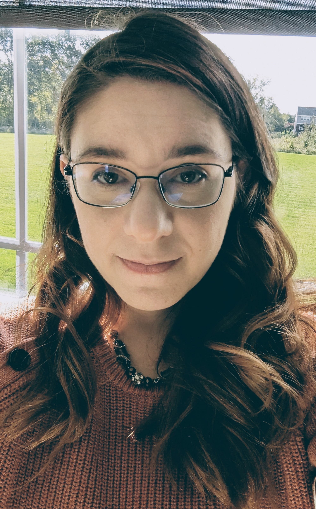

With 4 years experience as a Quality Assurance Analyst,
I am transitioning towards a full stack developer career.
As a current Full Stack C# student at Grand Circus Bootcamp,
I am mastering C#, .NET, SQL Server, and JavaScript. My experience
as a QA in Agile and Scrum environments has given me the skills to
continuously deliver iterative results and collaboration within dev
teams. My testing expertise, project management skills,
and Associate's degree in Visual Communications make me an
excellent fit for an application development team.
I have a passion for running, especially during the summer months. One of my most memorable experiences was participating in a half marathon. At the start of each summer, I kick off the season by signing up for a 5K race. My goal is simply to see how I perform, even if my pace is slow. By the end of the summer, I choose another 5K to run, allowing me to measure the progress I've made over the season. This routine not only keeps me motivated but also gives me a clear sense of achievement as I witness my improvement.